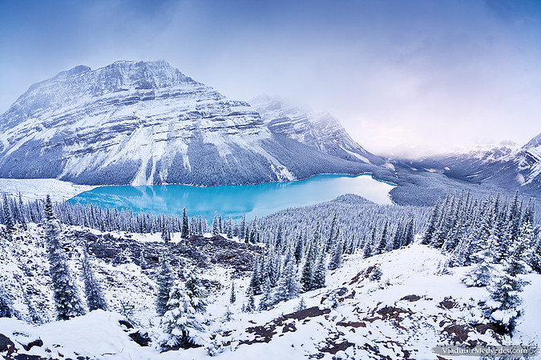
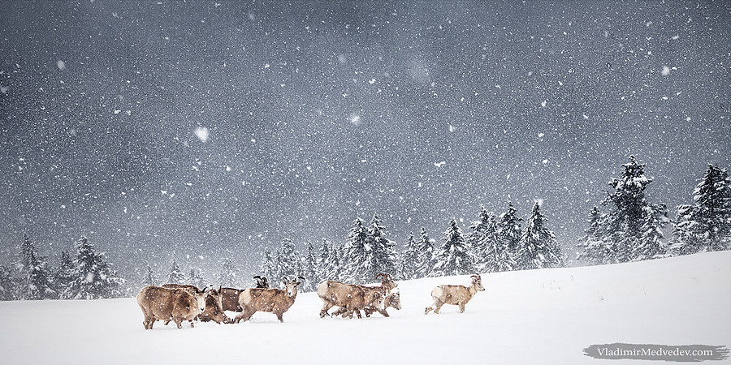
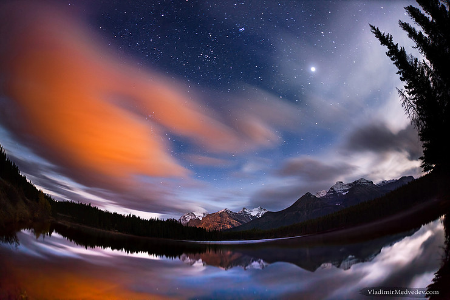

The stillness of the red deer stag in the twilight made it almost invisible to motorists speeding down thehighway through Jasper National Park, Canada. But its silhouette at the side of the road caught Vladimir's eye. By the time he had pulled over, this image was already in his mind. 'I wanted to show how the natural world often exists so close to us, yet is so often unseen,'' he says. Working swiftly, Vladimir positioned his tripod and set the shutter speed low, so that headlights would leave the longest light trail possible, and waited for a truck to thunder by, hoping the deer wouldn't move. 'The stag may have been inconspicuous, but I wasn't. As long as I stayed there, it was no longer invisible. So I left straight away, so as not to betray its presence.''
Peyto Lake in Banff National Park, Canada, is renowned for its beautiful colour. The milky turquoise-blue tint is caused by light bouncing off silt suspended in the water - glacial milk - the result of the grinding action of the glaciers that feed it. 'On clear days, the light in the morning and in the evening is too weak to capture its beauty,' says Vladimir. 'During the day, the light is too harsh.' The solution, he decided, was to wait for a snowfall to soften the light. But that proved logistically challenging. 'In spring, the lake vanishes beneath the ice,' he says. 'In autumn, it snowed only twice.' But on one of those occasions, Vladimir was able to get there in time to catch the brief lull just after one snowstorm and before the next. The light was perfect, he says, 'with the sun setting over the horizon and on the opposite side, a new storm front approaching'.
At 1,800 metres in the mountains of Canada's Banff National Park, bighorn sheep are forced to scrape down into the snow with their hooves to reach the grass below. Vladimir watched the hardy herd from the shelter of a clump of trees. At first, he took a series of portraits. But then he realised that the context was missing. By using a wide-angle lens he could show the whole herd in its environment. Vladimir worked out which way the herd was heading and then 'walked up the slope and sat right in their path. They saw me, but they weren't bothered,' he says. 'They simply walked around me and continued on their way uphill.'
As the full moon sunk below the horizon on one side of Lake Louise in Banff National Park, Canada, the morning sun edged its way up at the other. The phenomenon occurs just once a month, and Vladimir was determined to photograph both celestial bodies simultaneously. 'I chose a fisheye lens because its wide angle meant that I could include much of the sky as well as the dramatic landscape.' He was lucky with the weather. Shortly after taking the shot, the clouds thickened and hid the sun for the remainder of its dawning.
